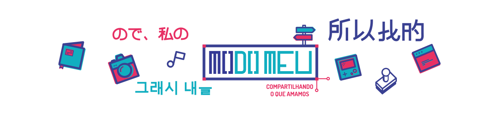

<!DOCTYPE html>
<html lang="en" dir="ltr">
  <head>
    <meta name="viewport" content="width=device-width, initial-scale=1.0">
    <meta charset="UTF-8">
    <title>Home | Modo Meu 2018</title>
    <link rel="shortcut icon" href="assets/images/modo-meu-fav-ico.ico" type="image/x-icon">
    <link rel="icon" href="assets/images/modo-meu-fav-ico.ico" sizes="32x32">
    <link rel="stylesheet" href="assets/css/reset.css" type="text/css">
    <link rel="stylesheet" href="https://fonts.googleapis.com/css?family=Open+Sans:400,700" type="text/css">
    <link rel="stylesheet" href="https://fonts.googleapis.com/css?family=Assistant:400,600,700,800" type="text/css">
    <link rel="stylesheet" href="assets/css/modo-meu-style.css" type="text/css">
  </head>
</html>
<body>
  <menu class="menu-top">
    <nav class="margin-auto" role="navigation">
      <ul class="display-inline f-left">
        <li><a href="#">Sobre</a></li>
        <li><a href="#">Anunciar</a></li>
        <li><a href="#">Contato</a></li>
      </ul>
      <ul class="display-inline f-right a-right">
        <li><a class="link-rosa" href="#">Modo Meu no Youtube</a></li>
        <li><a class="link-rosa" href="#">[513] Design</a></li>
        <li><a class="link-rosa" href="#">[513] Podcast</a></li>
      </ul>
    </nav>
  </menu>
  <menu class="menu-floating" style="display: none;">
    <nav role="navigation">
      <ul>
        <li class="logo"><a href="#"></a></li>
        <li><a href="#">Cinema & TV</a></li>
        <li><a href="#">Colunas</a></li>
        <li><a href="#">Design</a></li>
        <li><a href="#">Evento</a></li>
        <li><a href="#">Fotografia</a></li>
        <li><a href="#">Game</a></li>
        <li><a href="#">Internet</a></li>
        <li><a href="#">Música</a></li>
        <li><a href="#">Podcast</a></li>
      </ul>
    </nav>
  </menu>
  <section class="container">
    <header class="header">
      <h1><a class="logo-top margin-auto" href="http://modomeu.com"></a></h1>
      <nav role="navigation">
        <ul class="menu-category">
          <li class="menu menu-arrow"><a href="#">Cinema & TV</a>
            <div class="submenu-container b-bottom-gray" style="display: none;">
              <ul class="submenu f-left">
                <li class="active"><a href="#">Animação</a></li>
                <li><a href="#">Animes</a></li>
              </ul>
              <div class="category-children f-left">
                <div class="child-row">
                  <div class="cat-posts">
                    <div class="highlight-home-secondary highlight-home-second opacity-background-white">
                      <div class="highlight-home-text">
                        <div class="highlight-home-title"><a href="#">Projeto criando meu planner | 513 Design</a></div>
                      </div>
                    </div>
                    <div class="highlight-home-secondary highlight-home-second opacity-background-white">
                      <div class="highlight-home-text">
                        <div class="highlight-home-title"><a href="#">Teste legal do sucesso </a></div>
                      </div>
                    </div>
                  </div>
                </div>
                <div class="child-row">
                  <div class="cat-posts">
                    <div class="highlight-home-secondary highlight-home-second opacity-background-white">
                      <div class="highlight-home-text">
                        <div class="highlight-home-title"><a href="#">Outro sucesso | 513 Design</a></div>
                      </div>
                    </div>
                    <div class="highlight-home-secondary highlight-home-second opacity-background-white">
                      <div class="highlight-home-text">
                        <div class="highlight-home-title"><a href="#">Mais outro teste legal do sucesso              </a></div>
                      </div>
                    </div>
                  </div>
                </div>
              </div>
            </div>
          </li>
          <li class="menu"><a href="#">Colunas</a></li>
          <li class="menu"><a href="#">Design</a></li>
          <li class="menu"><a href="#">Evento</a></li>
          <li class="menu"><a href="#">Fotografia</a></li>
          <li class="menu"><a href="#">Game</a></li>
          <li class="menu"><a href="#">Internet</a></li>
          <li class="menu"><a href="#">Literatura</a></li>
          <li class="menu"><a href="#">Música</a></li>
          <li class="menu"><a href="#">Youtube</a></li>
          <li class="menu"><a href="#">Podcast</a></li>
        </ul>
      </nav>
    </header>
    <div class="content f-left">
      <aside class="sidebar a-left f-right">
        <nav class="social widget">
          <ul>
            <li><a href="#"></a></li>
            <li><a href="#"></a></li>
            <li><a href="#"></a></li>
            <li><a href="#"></a></li>
            <li><a href="#"></a></li>
            <li><a href="#"></a></li>
          </ul>
        </nav>
        <div class="search widget b-bottom-gray">
          <form>
            <input class="input-text" type="text" placeholder="Busque o que deseja">
            <input class="input-submit" type="submit" value="">
          </form>
        </div>
        <div class="adsense widget">
          <div class="box">publicidade</div>
        </div>
        <div class="facebook-box widget"><a class="btn btn-default" href="#">facebook</a></div>
        <div class="pinterest-box widget">
          <div class="box">
            <script async="" defer="" src="//assets.pinterest.com/js/pinit.js"></script><a data-pin-do="embedUser" data-pin-board-width="300" data-pin-scale-height="250" data-pin-scale-width="80" href="https://www.pinterest.com/modomeu/"></a>
          </div>
        </div>
        <div class="newsletter widget newsletter-subscription">
          <script type="text/javascript">
            //<![CDATA[
            if (typeof newsletter_check !== "function") {
            window.newsletter_check = function (f) {
            var re = /^([a-zA-Z0-9_\\\.\-\+])+\@(([a-zA-Z0-9\-]{1,})+\.)+([a-zA-Z0-9]{2,})+$/;
            if (!re.test(f.elements["ne"].value)) {
            alert("The email is not correct");
            return false;
            }
            if (f.elements["nn"] && (f.elements["nn"].value == "" || f.elements["nn"].value == f.elements["nn"].defaultValue)) {
            alert("The name is not correct");
            return false;
            }
            for (var i=1; i<20; i++) {
            if (f.elements["np" + i] && f.elements["np" + i].required && f.elements["np" + i].value == "") {
            alert("");
            return false;
            }
            }
            if (f.elements["ny"] && !f.elements["ny"].checked) {
            alert("You must accept the privacy statement");
            return false;
            }
            return true;
            }
            }
            //]]>
          </script>
          <h2>RECEBA NOSSOS E-MAILS</h2>
          <h5>CHEIOS DE AMOR</h5>
          <form method="post" action="http://localhost/modomeu/?na=s" onsubmit="return newsletter_check(this)">
            <input class="input-text" type="text" name="nn" placeholder="NOME" required="">
            <input class="input-text" type="email" name="ne" placeholder="E-MAIL" required="">
            <input class="input-submit newsletter-email" type="submit" value="Enviar">
          </form>
        </div>
      </aside>
      <section class="content-posts f-left">
        <article class="post opacity-background-white">
          <header class="post-header">
            <div class="title">
              <div class="category cinema-e-tv"><a href="#">Cinema e TV</a></div>
              <div class="post-data">
                <p>20 de Abril de 2017</p>
              </div>
              <h1>Ouvindo o Country encantador de Zac Brown Band os apadrinhados de dave Grohl (H2)</h1>
              <div class="post-meta">
                <p>Autor:<a href="#">Mariana Fernandes</a></p>
              </div>
            </div>
          </header>
          <div class="post-content"><a href="#"></a>
            <h3>Você conhece Zac Brown Band? (h3)</h3>
            <p>H5 - A alguns meses atrás comentei sobre o novo álbum da banda Foo Fighters, que está previsto para o segundo semestre de 2014 e de acordo com o próprio Dave Grohl, esse será o trabalho mais revolucionário dos últimos tempos (<a href="#">falei disso aqui - h2</a>). Bem, mas o objetivo desse post não é falar de como o Foo Fighters é uma banda incrível (afinal, todo mundo já sabe), mas sim do grupo <strong>Zac Brown Band (h4)</strong>, no qual Dave apadrinhou e esteve presente na produção de seus últimos álbuns, (The Grohl Sessions Vol. 1 e 2).</p>
            <p>Para não deixar ninguém por fora do assunto, já que não conheço muita gente que os conhece o grupo, a banda do vocalista Zac Brown, com 12 anos de estrada, possui sete e integrantes – Zac Brown (vocal e violão), Jimmy De Martini (violino e vocal), John Driskell Hopkins (baixo e vocal), Coy Bowles (violão e teclado), Chris Fryar (percussão) e Clay Cook (violão, teclado, bandolim, guitarra e vocal) – e se classifica no clássico gênero Country, com bota, chapéu, músicas irresistíveis e tudo.</p>
            <div class="wp-caption aligncenter" style="width: 1010px;/* width: 100%; */"><a href="http://modomeu.com/cinema-e-tv/series/conhecendo-os-varios-subgrupos-do-universo-nerd-com-a-serie-documental-geek/attachment/0220" rel="attachment wp-att-14958"></a>
              <p class="wp-caption-text"> Arte Ivan Reis</p>
            </div>
            <p>De ante mão, peço para que largue o preconceito bobo, que quase tudo mundo tem sobre o Country, pois além de ter uma forte influência cultural, esse estilo musical é qualidade pura, desde as letras que é comum falar de “amor”, até as melodias com uma mistura de gaita, banjo e violino (sei que tem outro nome mais eu não lembro como se chama e parece um violino), por isso é mais do que merecido dar uma chance.</p>
            <p>Voltando a falar de Zac Brown Band, como o próprio Grohl comenta em algumas entrevistas, os caras são geniais! Já ouvi uns quatro álbuns da banda e garanto que nenhum deixa a desejar, inclusive o apadrinhador Dave Grohl que soube realçar a essência da banda sem trazer um estranhamento entre os novos trabalhos e os antigos.</p>
            <blockquote>Me diz uma coisa, quando você pensa em Fortaleza, qual o primeiro lugar que vem a cabeça? Praia, né?! Beira Mar?! Sol, areia, mar, filtro solar, biquíni e verão o ano todo. Pois bem, você está certíssimo, mas tem horas que enche o saco e a gente precisa dar uma variadinha, principalmente para que já mora na terrinha.</blockquote>
            <p>Por mais que os últimos trabalhos tenham uma ótima produção, meu predileto ainda é o “The Foundation” que tem uma faixa de nome “Mary” e que para a minha alegria tem uma letra incrível e completamente diferente de certas “Mariana conta um…”.</p>
            <ul>
              <li><strong>1º ep -</strong><a href="http://www.christophniemann.com/portfolio/">Christoph Niemann</a> – ilustrador</li>
              <li><strong>2º ep -</strong><a href="http://news.nike.com/tinker-hatfield">Tinker Hatfield</a> – designer da Nike</li>
              <li><strong>3º ep -</strong><a href="http://esdevlin.com/">Es Devlin</a> – cenógrafa</li>
              <li><strong>4º ep -</strong><a href="https://www.big.dk/">Bjarke Ingels</a> – arquiteto</li>
              <li><strong>5º ep -</strong><a href="http://www.pentagram.com/#/partners/109681">Paula Scher</a> – designer gráfico (<a href="https://www.behance.net/paulascher">veja o behance</a>)</li>
              <li><strong>6º ep -</strong><a href="http://platonphoto.com/menu/">Platon</a> – fotógrafo</li>
              <li><strong>7º ep -</strong><a href="https://www.fcagroup.com/en-US/governance/management/Pages/ralph_gilles.aspx">Ralph Gilles</a> – designer de automóveis</li>
              <li><strong>8º ep -</strong><a href="http://www.studioilse.com/ilse-crawford">Ilse Crawford</a>– designer de interiores</li>
            </ul>
            <h3>Vídeos anteriores:</h3>
            <ul>
              <li><a href="http://modomeu.com/videos/canal-modo-meu/5-filmes-anos-80-por-john-hughes-modo-meu">5 Filmes dos anos 80 por John Hughes</a></li>
              <li><a href="http://modomeu.com/videos/canal-modo-meu/series-pouco-faladas-modo-meu">Séries pouco faladas</a></li>
              <li><a href="http://modomeu.com/videos/513-design/termos-que-designer-usa-513-design">Termos que designer usa</a></li>
            </ul>
          </div>
          <footer class="post-footer opacity-background-white f-left">
            <div class="post-footer-info f-left">
              <div class="post-footer-author-photo"></div>
              <div class="post-footer-author f-left">
                <div class="post-footer-author-name">POSTADO POR:
                  <h2><a href="#">Mariana Fernandes</a></h2>
                </div>
                <div class="post-footer-author-desc">Publicitária de formação debandada para o lado do design. Editora do Modo Meu e mais uma lista repleta de coisas.</div>
              </div>
            </div>
            <div class="post-footer-meta f-left">
              <div class="post-footer-tags">TAGS:<a href="#">6 ON 6</a>,<a href="#">ARVORISMO</a>,<a href="#">BIKE</a>,<a href="#">ESCALADA</a>,<a href="#">OCUPE O COCÓ</a>,<a href="#">PARQUE DO COCÓ</a>,<a href="#">TIROLESA</a>,<a href="#">TRILHA</a></div>
              <div class="post-footer-social">
                <ul>
                  <li class="a-right">Compartilhe este post:</li>
                  <li><a href="#" title="Compartilhar postagem no Twitter"></a></li>
                  <li><a href="#" title="Compartilhar postagem no Facebook"></a></li>
                  <li><a href="#" title="Compartilhar postagem no G+"></a></li>
                  <li><a href="#" title="Compartilhar postagem no Menssenger"></a></li>
                  <li><a href="#" title="Compartilhar postagem no Whatsapp"></a></li>
                </ul>
              </div>
            </div>
          </footer>
        </article>
      </section>
      <!--include sidebar.pug-->
    </div>
  </section>
  <div class="container">
    <div class="content f-left">
      <div class="page-title"> 
        <h2>Posts Relacionados</h2>
      </div>
      <section class="post-list">
        <article class="post">
          <div class="post-image"></div>
          <div class="post-text">
            <h3 class="category literatura"><a href="#">Literatura</a></h3>
            <h2 class="post-title"><a href="#">Muita ação e correria com Coração de Aço | Resenha</a></h2>
          </div>
          <div class="post-meta">
            <p>08/08/2017</p>
            <p>Autor: <a href="#">Dyego Cruz</a></p>
          </div>
        </article>
        <article class="post">
          <div class="post-image"></div>
          <div class="post-text">
            <h3 class="category cinema-e-tv"><a href="#">Cinema e TV</a></h3>
            <h2 class="post-title"><a href="#">Star Trek – Portal do Tempo de A. C. Crispin | Resenha</a></h2>
          </div>
          <div class="post-meta">
            <p>08/08/2017</p>
            <p>Autor: <a href="#">Dyego Cruz</a></p>
          </div>
        </article>
        <article class="post">
          <div class="post-image"></div>
          <div class="post-text">
            <h3 class="category games"><a href="#">Games</a></h3>
            <h2 class="post-title"><a href="#">Alto’s Adventure, simulando o snowboarding atrás de lhamas</a></h2>
          </div>
          <div class="post-meta">
            <p>08/08/2017</p>
            <p>Autor: <a href="#">Dyego Cruz</a></p>
          </div>
        </article>
        <article class="post">
          <div class="post-image"></div>
          <div class="post-text">
            <h3 class="category tecnologia"><a href="#">Tecnologia</a></h3>
            <h2 class="post-title"><a href="#">Deixando seus pensamentos mais estilosos com Notegraphy</a></h2>
          </div>
          <div class="post-meta">
            <p>08/08/2017</p>
            <p>Autor: <a href="#">Dyego Cruz</a></p>
          </div>
        </article>
      </section><a class="btn btn-others" href="#">VEJA MAIS</a>
    </div>
  </div>
  <div class="container-full f-left">
    <div class="feed-instagram f-left">
      <h3><a href="#">@modomeu</a></h3>
      <ul></ul>
    </div>
  </div>
  <footer class="main-footer-container f-left a-center"><a class="button-back-to-top" href="#"></a>
    <div class="footer margin-auto">
      <div class="logo-modo-meu widget"><a href="#"></a>
        <div class="copyright">Modo Meu - All<br>                    Rights Reserved<br>                    2009/2014 ©</div>
      </div>
      <div class="archive widget">Veja os posts mais antigos do blog de forma mais fácil
        <select>
          <option>SELECIONE O MÊS</option>
          <option>Setembro (10)</option>
          <option>Agosto (20)</option>
          <option>Julho (30)</option>
          <option>Junho (18)</option>
        </select>
      </div>
      <div class="partners widget">
        <ul>
          <li class="a-right">Parceiros<br />Modo Meu</li>
          <li><a href="#"></a></li>
          <li><a href="#"></a></li>
          <li><a href="#"></a></li>
          <li><a href="#"></a></li>
          <li><a href="#"></a></li>
        </ul>
      </div>
      <ul class="social-footer widget">
        <li><a class="social twitter" href="#"></a></li>
        <li><a class="social facebook" href="#"></a></li>
        <li><a class="social feed" href="#"></a></li>
        <li><a class="social youtube" href="#"></a></li>
        <li><a class="social pinterest" href="#"></a></li>
        <li><a class="social instagram" href="#"></a></li>
      </ul>
    </div>
    <div class="footer-modocromatico a-center f-left">
      <div class="text a-right f-left">Site planejado, produzido e<br>pertencente ao Modocromático ©</div>
      <div class="logo-container a-left f-left"><a class="logo-modocromatico" href="#"></a></div>
    </div>
  </footer>
  <script src="node_modules/jquery/dist/jquery.js"></script>
  <script src="assets/js/scripts.js"></script>
</body>